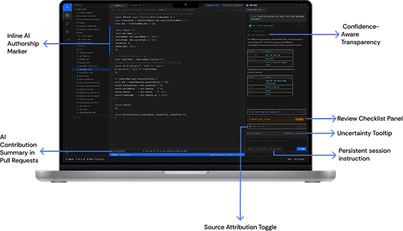
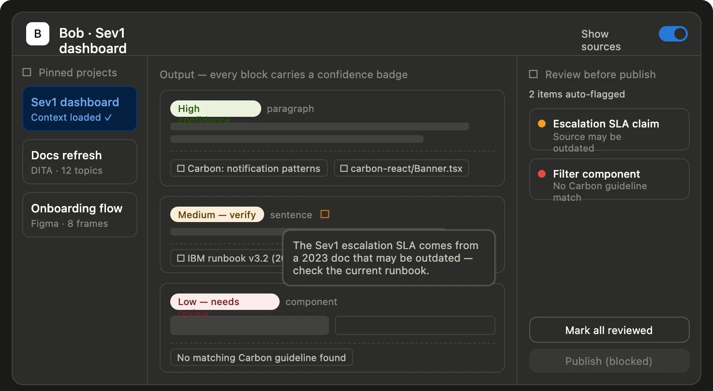
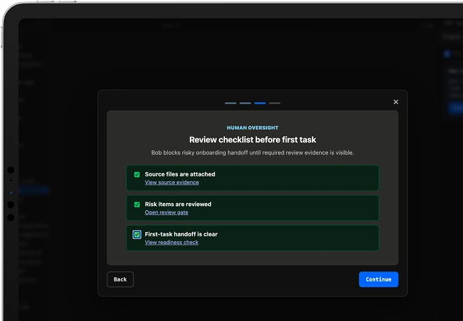
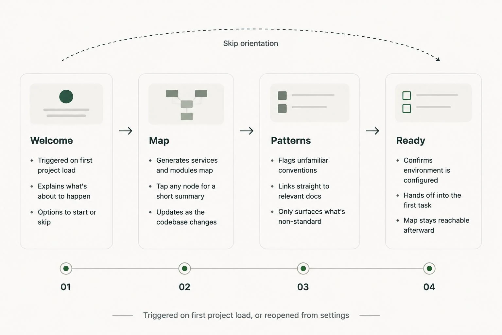
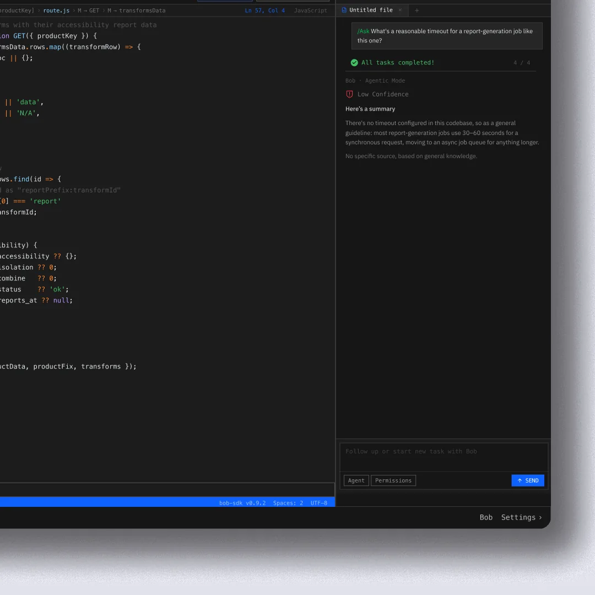
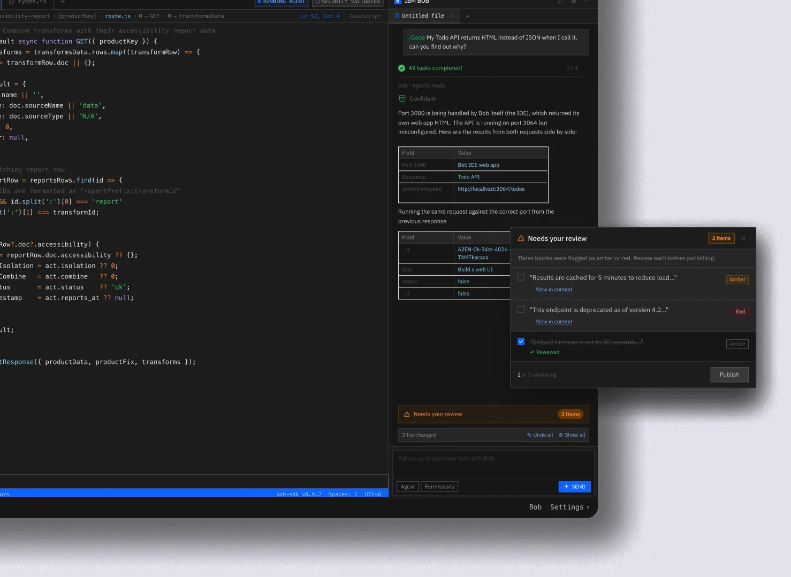
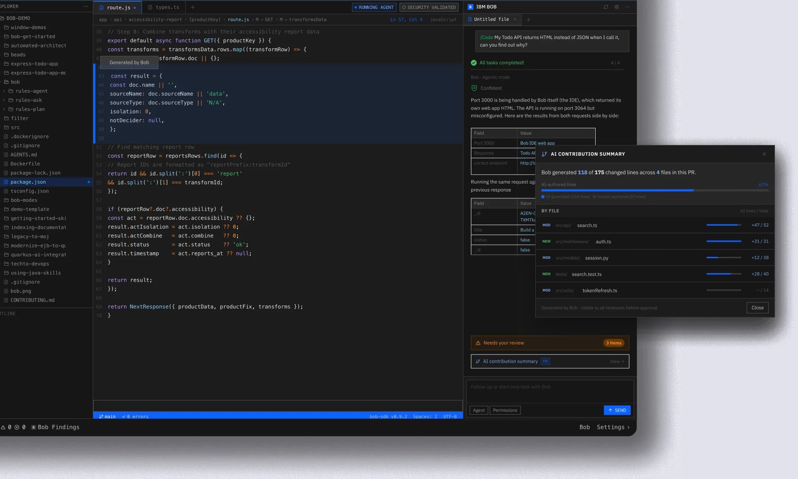

IBM · UX Research
Making an enterprise AI coding agent understandable.
- Problem
- Teams knew the agent hallucinated, varied between runs and hid its reasoning, but had no design language for any of it.
- My role
- Ran and analysed the interviews with UX designers, developers and content designers, as researcher and designer.
- Result
- Three reusable frameworks for designing around an AI agent that isn't always right, built from themes found in all three disciplines.

Turning AI's rough edges into problems design can work on.
AI coding agents can plan and write code across a whole repository, but they don't always behave the same way twice. They can state a guess as fact, give different plans for the same prompt, and keep their reasoning hidden. In enterprise teams, those rough edges decide whether people trust the tool or quietly stop using it.
For my MSc HCI capstone at UCD, in partnership with IBM, I looked at how the people who build these products experience those failure modes, and how design could respond to them.
Known problems with no design language.
Teams already knew the agent hallucinated, varied between runs and hid its reasoning. Those issues were usually treated as model-quality problems for engineering, not as experience problems design could shape. That left designers without shared vocabulary or patterns for when the agent was uncertain, inconsistent or opaque.
Listening across three disciplines.
I ran semi-structured interviews with UX designers, developers and content designers. Each group meets the agent at a different point: designers shape the experience, developers depend on the output, and content designers write the words that explain it.
I coded the transcripts with thematic analysis, mapped the themes into a SWOT, and then turned the strongest tensions into evidence-based How Might We statements to explore in workshops with IBM UX.
Separating what users struggle with from what the model does.
The analysis kept user problems apart from model behaviour, so each theme could become a direction specific enough to prototype.
Thematic analysis
Four themes came up across all three disciplines. Each one became a How Might We statement for the workshops with IBM UX.
Hallucination
Non-determinism
Opacity
Trust
From themes to features
Each theme went through the same three steps: anchor it to what participants said, split it into specific moments, then test every feature against a precise complaint before it reached the workshop.
From themes to features
-
1. Anchor in themeReframed as an HMW
Each feature traces back to a theme from the interviews, such as Human Oversight Safeguards Enterprise Trust (PS2, PS11).
-
2. DecomposeSub-problem to pattern
Each HMW is split into the moments a pain point shows up. Confidence-Aware Transparency became four features, not one generic trust indicator.
-
3. Stress testEvidence + workshop
Every feature is checked against a specific complaint, prioritised, then validated with IBM stakeholders in the workshop.
Three frameworks any team can reuse.
I didn't design one-off screens. I turned the HMWs into three frameworks that any team building on the agent can apply. Each one makes the agent's behaviour easier to read without asking users to understand the model underneath.
Confidence scoring
Every suggestion shows how sure the agent is and what that rating is based on, so people know where to look closely.
Suggestions Sorted by confidence ↓

The same pattern in the wireframe: a badge on every block, a source note on hover, and publishing blocked until flagged items are reviewed.
Agentic transparency layer
The agent's steps can be opened when someone wants to know why it acted, and stay out of the way when they don't.
Why the agent did this
- Read the issue“Login fails after token expiry”
- Searched the codebaseFound 3 call sites for refreshToken()
- Considered 2 approachesChose retry with backoff over a silent refresh
- Waiting for your approvalDiff ready · 2 files
Contextual onboarding assistant
A first-run assistant that orients someone inside a new codebase: a short welcome, a map of services and modules, the patterns that differ from convention, and a readiness check before the first task. It can be skipped at any point.

Language and IDE: Python and VS Code. Framework: Vanilla JS, bundled with Next.js. Hosted via OpenAI Sites.

First-run flow: orientation, a codebase map, key patterns and setup steps, which can be skipped at any point.
Three features, shown in the mockups.
These are the three features visible in the high-fidelity mockups. I built them in Figma with IBM's Carbon design system and wrote their specifications. The mockups use illustrative data, not measured results. The onboarding assistant is covered above.
Feature 1: Confidence badge and uncertainty reason
Part of Confidence-Aware Transparency, anchored in the theme "Human Oversight Safeguards Enterprise Trust" (PS2, PS11).
The problem: Uncertain output reads like certain output, so people don't know where to look closely.
Designed: A green, amber or red badge on each output block, with a plain-language reason for low confidence, such as no matching source, conflicting sources or an outdated source. In the mockup, a red Low Confidence badge sits above an answer that says there is no specific source and that it is based on general knowledge.
Design decision: Scoring runs in a separate calibration layer instead of asking the model to rate its own confidence, because self-reported confidence from generative models is unreliable.

A red Low Confidence badge, with a note that there is no specific source and the answer comes from general knowledge.
Feature 2: Review checklist panel
Part of Confidence-Aware Transparency, same theme (PS2, PS11).
The problem: A badge tells people where to look, but nothing makes them look.
Designed: A panel that lists every amber and red block. Publish stays locked until each one is checked off, and each item links back to the block in context. Flags carry a text label (Amber, Red) as well as colour, so they don't rely on colour alone.

The review checklist in Bob's side panel. Flagged claims are marked amber or red and must be reviewed before publishing.
Feature 3: AI-Generated Code Attribution
Anchored in the same theme (PS2, PS11).
The problem: Reviewers need to know which code the agent wrote before they approve it.
Designed: A "Generated by Bob" mark and highlight on AI-written lines in the editor, and an AI contribution summary on the pull request showing how many changed lines Bob wrote and in which files. I borrowed both patterns from version control, because enterprise developers already know how to read them.
Design decision: Both depend on provenance metadata that Bob writes when it generates the code, and that has to survive edits by people who aren't Bob. I rated the feature medium feasibility for that reason.

AI-written lines are marked in the editor, and a summary shows how much of the pull request Bob generated. Prototype with illustrative data.
Designing for a system that isn't always right.
Most interfaces assume the system is correct. AI agents break that assumption, so the design job moves from hiding complexity to showing the right amount of it at the right moment: how confident the agent is, why it acted, and what the user should check.
Talking to three disciplines was what made the difference. Developers, designers and content designers described the same failures in different words. Mapping those differences is what turned vague worries about AI trust into frameworks a team can build and test.